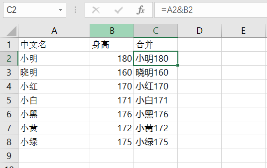
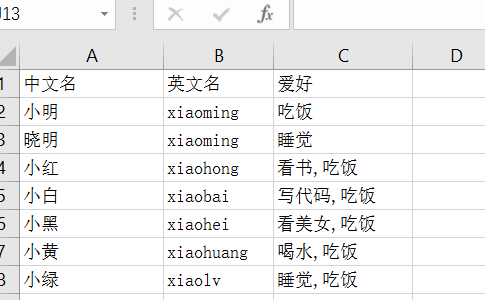

Excel合并功能记录
2017-05-10
组里经常有很多杂事情，使用Excel做一些数据统计，而且通常是比较复杂的数据加工处理和统计。
数千行的数据进行筛选、去重、统计或者其他更复杂的操作，假如依靠手动，无论是准确性还是花费的时间都划不着。
Excel中菜单的功能和内置函数可以处理大多数的操作。
| 中文名 | 身高 |
| 小明 | 180 |
| 晓明 | 160 |
| 小红 | 170 |
| 小白 | 171 |
| 小黑 | 176 |
| 小黄 | 172 |
| 小绿 | 175 |
对上述数据进行列合并，使用公式”=A2&B2”

但是有些复杂的就比较难以胜任。
比方说，进行复杂的数据合并。
| 中文名 | 英文名 | 爱好 |
| 小明 | xiaoming | 吃饭 |
| 晓明 | xiaoming | 160 |
| 小红 | xiaohong | 吃饭 |
| 小红 | xiaohong | 看书 |
| 小白 | xiaobai | 吃饭 |
| 小白 | xiaobai | 写代码 |
| 小黑 | xiaohei | 吃饭 |
| 小黑 | xiaohei | 看美女 |
| 小黄 | xiaohuang | 吃饭 |
| 小黄 | xiaohuang | 喝水 |
| 小绿 | xiaolv | 吃饭 |
| 小绿 | xiaoming | 睡觉 |
对于中文名和英文名都相等的行，对爱好进行合并。
需要对数据进行排序的预处理，使符合合并条件的行相邻在一起。然后执行如下VBA代码。
Sub MergeCell()
Dim i
For i = 1 To UsedRange.Rows.Count
If Cells(i, 1) = "" Then
Exit For
End If
If LCase(Cells(i, 1)) = LCase(Cells(i + 1, 1)) And LCase(Cells(i, 2)) = LCase(Cells(i + 1, 2)) Then
Debug.Print Cells(i, 2).Text + Cells(i, 3).Text + Cells(i, 7).Text
Cells(i + 1, 3).Value2 = Cells(i + 1, 3).Value2 + "," + Cells(i, 3).Value2
Rows(i).Delete
i = i - 1
End If
Next
End Sub

昨天晚上做了个类似的功能，但是数据量有8000多行，所以记录一下自己的VBA代码